Once the OH report is finished and sent for patient review, it can be Authorised, with or without requesting factual changes, or Not Authorised by the patient.
Please refer to Case Management: Report Writing - Occupational Health article for details on writing the OH Report.
This article will walk you through the process of authorising (or not authorising) the OH Report by the patient before it's released to the patient's employer*.
*The report review step can be skipped for an individual report or skipped for all referrals coming from a specific employer.
After the OH Report had been sent for patient review, said patient receives an email message* and an SMS similar to the examples below:
*The email message contains information about the report auto release dates.
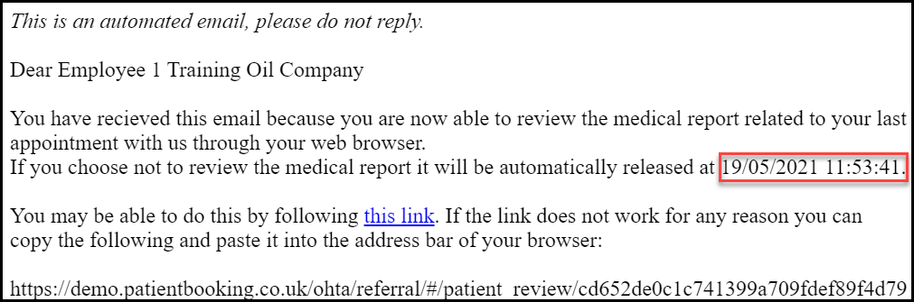
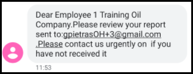
Following the link in the email (alternatively pasting the URL into the web browser's address bar) takes the patient to the Medical Report Review page, where:
1. They click Send validation code via SMS.
2. Having received the 4-digit code, they enter it in the field as prompted and hit Verify Code.
3. Successful code verification opens the Medical report.
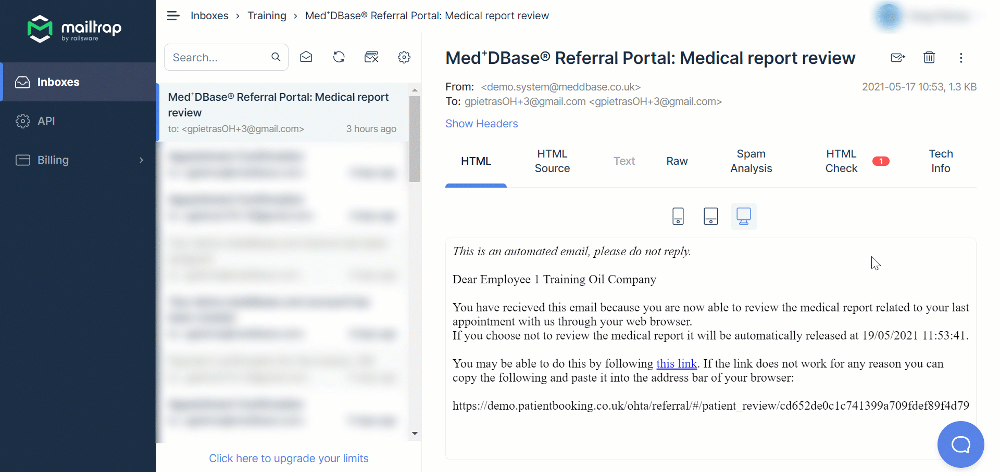
Having read the Medical report, the patient has multiple options available to continue.
If the patient agrees with the information contained in the OH Report, they can simply authorise it.
To do this, the patient:
1. Scrolls to the bottom of the Medical Report Review dialogue and clicks Authorise Report
2. (Optional) In the next dialogue the patient can download the report.
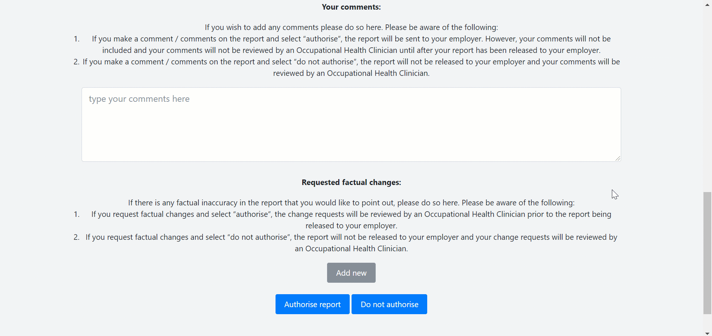
The patient's manager assigned to the referral will also be notified of the report's release via email. To view the report, the manager:
1. In the received email, clicks the link to the Referral Portal.
This takes the manager to the Referral Portal, specifically to the list of Cases, where the manager:-
2. Clicks on the Case to which the referral and the resulting report belong.
3. In the Referrals section, expands the Documents column of the relevant referral and clocks on the report document.
4. The OH Report can be viewed and downloaded
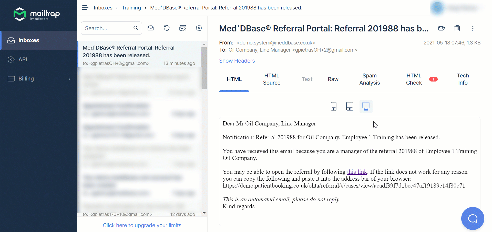
The patient can authorise the OH Report whilst providing comments and requesting factual changes to be made by the clinician who had written the report*.
To do this, the patient:
1. Scrolls to the bottom of the Medical Report Review dialogue where they can click Authorise Report
2. (Optional) In the next dialogue window the patient can download the report in its current state.
The list of possible factual changes the patient can request is configurable in the Incoming OH Referral work item. Click here for a detailed article.
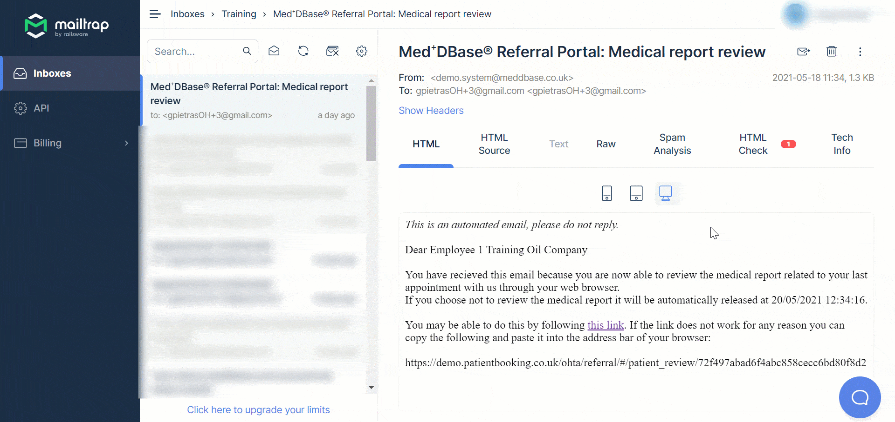
You (i.e. the OH specialist who had written the report) receive a notification of factual changes having been requested by the patient. The OH Referral work item will also appear back in the Work management suite.
To action the factual changes request:-
1. Navigate to the Occupational Health inbox.
2. Select the referral showing the Status as Report Changes Required.
3. Click the work item*.
*The patient's Comments and Required factual changes are visible in the top part of the Report Changes Required dialogue window.
4. Correct the information as per the request e.g. DOB on the Patient Record, or acknowledge the patient request regarding the information captured during the consultation in the Details section e.g. ''Patient mentioned X during the consultation''
5. Click Send to referrer and the report gets released to the patient's employer*.
*When patient demographic errors are corrected and any comments regarding semantics are acknowledged, a new version of the OH Report is automatically generated. The patient is not notified of the new report version, as they have already consented to the release with suggested corrections.
6. Click Archive to remove the work item from your Work List.
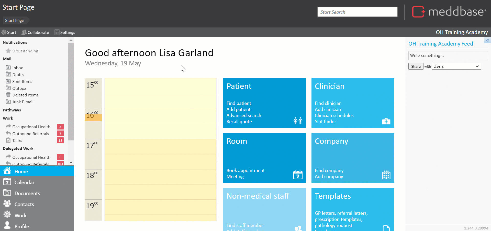
The line manager assigned to the referral receives an email and/or SMS message informing them of the report's release. The email contains a link to the report and the URL (in case the link is unresponsive). To access the report, the manager needs to:-
1. Click the link in the email they'd received (or copy the URL and paste it into their browser's address bar)
2. Click Send validation code via SMS and wait for the text to arrive.
3. Submit the code from the text message into the free text field and click Verify code.
4. In the Manager Report Review the manager can find details of the Case incl. Service Level Agreement status. The Documents section contains the original Referral letter and the updated OH Report incl. patient comments and OH specialist's corrections.
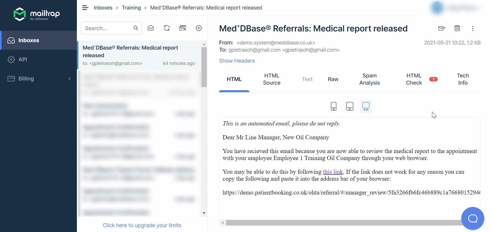
The patient can decide not to authorise the OH report, resulting in the document not being released to their employer.
To do this, the patient:-
1. Scrolls to the bottom of the Medical Report Review dialogue and clicks Do not authorise*.
*The patient can provide comments regarding their decision to not authorise the report, however this is not mandatory.
The next dialogue window provides confirmation of the review outcome and informs the patient of the option to review the report again.
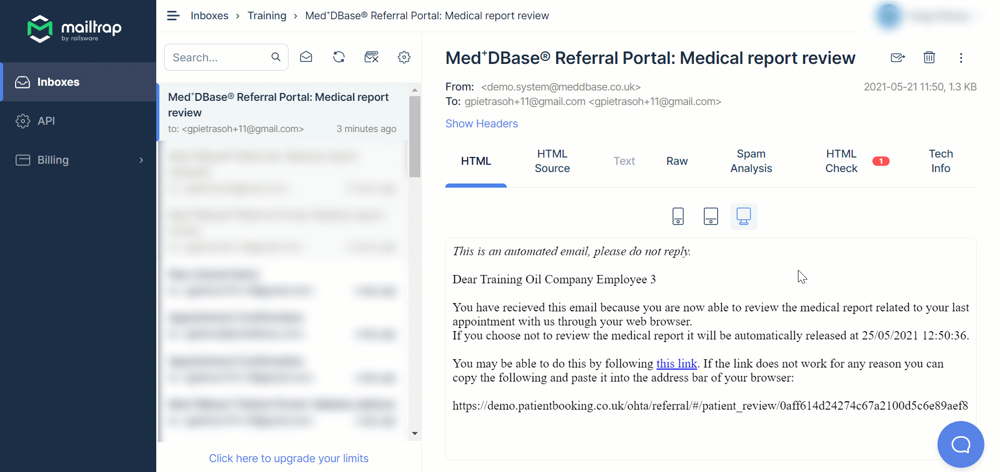
You (i.e. the OH specialist who had written the report) receive a notification of the report having been refused by the patient. The OH Referral work item will also appear back in the Work management suite.
To action the work item:-
1. Navigate to the Occupational Health inbox.
2. Select the referral showing the Status as Report Changes Required.
3. Click the work item*.
*The patient's decision to not authorise the report is visible here (with or without comments). The OH specialist can not make any changes which would result in releasing the report.
4. Click Complete referral.
5. Click Archive to remove the work item from your Work List**.
**The Case Management workflow ends here. The patient's line manager will see, via the Referral Portal, the referral status change to 'Employee refused report release'.
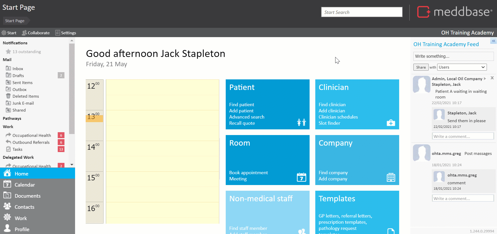
*Case overview on the Referral Portal (incl. referral details)
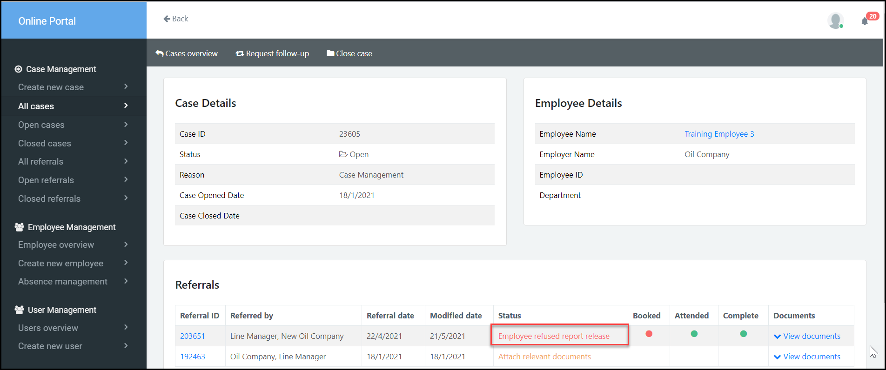